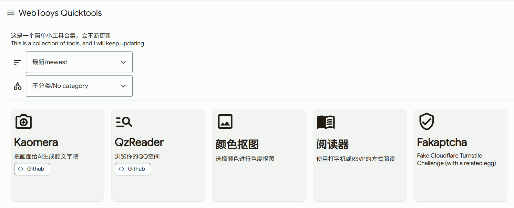
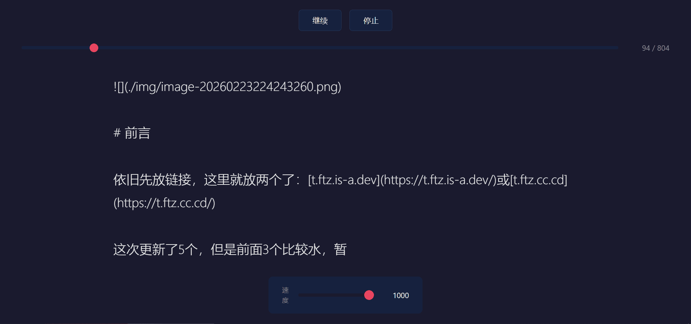
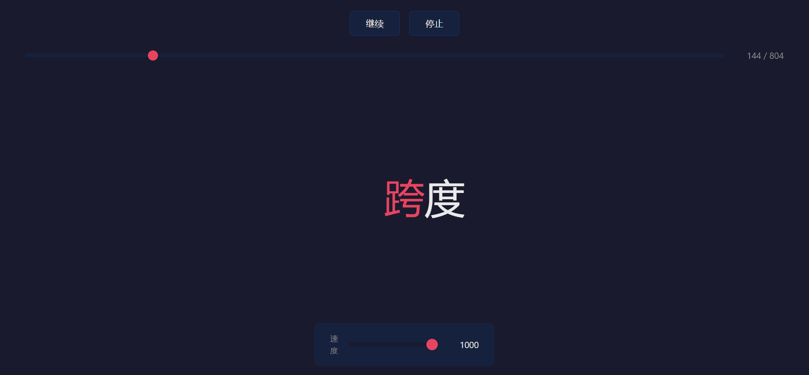
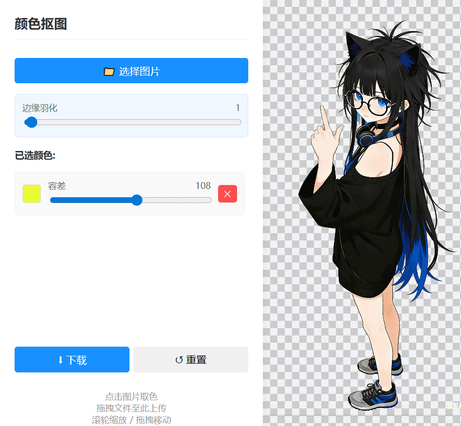

前言
依旧先放链接，这里就放两个了：t.ftz.is-a.dev或t.ftz.cc.cd
这次更新了5个，但是前面3个比较水，暂定叫3.5弹更新了
这次既没有2的重磅、单项目超长的时间跨度、高技术力，也没有3超多的精力花费（尤其是学业加重的情况下），这次主要是在这个寒假完成的，甚至最重要的两个是在春节期间做出来的
我调整了一下，决定以后将要：
- 用AI辅助加速编程
- 尽可能尝试以前没碰过的东西
这次的确体现了一点，不多，毕竟超过一半是纯vibe的
介绍
前言就这么简单，比上次少了好几千字，也比以前直接开始介绍多
前三个vibe的
对，前三个都是纯粹vibe（总觉得标题之间得写句话）
Fakaptcha
你是不是觉得有时候cf验证码要验证很久等了半天都打不开网站很烦？我也觉得，所以一时兴起，做了这个玩意，懒得动手，交给AI了，用Gemini Cli做的，在这之前换了各种模型我都不满意，因为太不像了
这是一个假验证码玩具，给你享受一下验证码过不去的痛苦
首先你至少要等待短短30秒，最长等待仅仅100秒（是不是太少了），有高达¼的概率成功并跳转到我用Cloudflare Error Page Editor（它的Github，挺好玩的）制作的几个页面（中的随机一个），而剩下¾嘛……刷新从来！（不会自动开始验证的哦~）
阅读器
快速序列视觉呈现，简称RSVP，是一种很酷的技术，用于以极快的速度向人们展示信息——每次在屏幕的同一位置呈现一个项目。不同于按照自己的节奏阅读整段文字，单词（或图像）会快速闪过，通常出现在视野中央。这有点像速读：是内容在移动，而不是你的眼睛在动。这样更容易处理信息，无需滚动或移动视线。
评论区已经有人做了一个，不过只支持英语，它按空格分词
此外，我受到GPT启发，我发现GPT类AI生成的过程中如果速度合适，多长都能跟着往下看下去
那我把这两个弄到一起吧
分词我使用window.Intl，我还让AI做了一个文本框+txt导入+epub导入，经实测，epub导入过长文本会截断，懒得查
可以随时调节进度和速度，可随时暂停，UI做得不错


抠图
这个是我在搞Alteidos的时候要用到的，需要抠图，网上的工具太难用了，一堆杂七杂八的，反正实现难度不大，趁着Qwen3.5-Plus刚推出就试着弄了一下，很简单的东西

界面有点简单（或许是因为我在个性化中选择了简洁风格对话）
只需要把图片拖上去，点一下要抠的颜色，调节一下就行了，非常简单实用
QzReader
想看介绍的话看上面的链接吧
QQ空间没有像推特那样自带导出的工具，只能靠大佬的导出助手了，不过大佬的archive原因……
既然导出了，没什么好的方式查看，所以就做了这个，顺便正式开始实行前面所说的那两个决定
- 尽可能尝试以前没碰过的东西：这次尝试了一下Shadcn/ui、tailwind css、bun的后端，一方面我喜欢shadcn的设计风格，一场下来，我的感受是——
- shadcn组件安装的方式挺好的，而且组件还多，是个好东西
- tailwind能让我写样式写的更快了，不过我觉得只适合react vue等框架，而且一旦样式多了，可读性会急剧下降，得慎用啊
- bun是个好东西
- 用AI辅助加速编程：我让AI算了一下，人工写的和纯粹AI负责的文件占比高达1:1！（而且一些人工写的文件里面也有AI参与的成分）（而且AI工作量不低），直接加速开发！
分析数据
没啥难点，主要是分析数据
首先我高达31.4MB的说说数据JSON直接把VSCode搞崩，然后上网找了个叫Huge JSON Viewer的东西，于都体验一般般，而且当我把Expand Level调高，直接卡死，最后发现最好用的是记事本（草），预览一点不卡
人工分析太麻烦了，交给AI吧，但是太长了，1M上下文只能读不到20%，只好截断交给AI了，在人机齐心协力工作下，分析好了原始json结构，规划好了数据库结构
其中发现几点很有趣
- 说说有个conlist存富文本，将文本分成几个部分，用type区分，令我惊讶的是，最常见的文本只是type2，而type0是@好友！还有type1链接，当我一位所有链接都会被type1的时候，发现#话题格式等东西在
conlist中的custom_display中直接写<a href='http://rc.qzone.qq.com/qzonesoso/?search=...' target='_blank'>#...#</a>，小表情会变成<img src='http://qzonestyle.gtimg.cn/qzone/em/e400830.gif' >（在custom_display下，如果是conlist[i].con就是[em]e400830[/em]），我还得写解析，我还以为你解析完了呢 - 遇到评论等没有
conlist的，直接一行文本下去，@好友变成@{uin:QQ号,nick:好友名字,who:1,auto:1}，就得自己解析了，话说这也不是json啊这更不好解析了，我懒得写，没写 - 我不知道是工具的问题还是QQ自己的屎山问题（工具是直接调用API的），有很多重复的东西，比如
pic和custom_images内容完全一样，在里面还有完全一样的pic_idurl1url2url3custom_url，很多地方都是加个custom_前缀就放完全一样的东西了 - 视频图片还有个
cunstom_mimeType，虽然对我来说没用，但是你mime为什么写的是扩展名而不是正常的mime类型 - QQ小程序分享的链接分为两种，一种是
http://mqqapi://microapp/open?mini_appid=...&fakeUrl=https://m.q.qq.com/a/s/...，一种是前面没有http://的，首先协议叠加就绷不住了，后面还有一个fakeUrl，这个才是真正的QQ空间网页端该跳转的，但是这么搞是何意味？ - ……
Kaomera
给我看我的视频，我剪了两个小时的啊，给我看给我看给我看给我看给我看给我看给我看不看打死你啊啊啊啊啊给我看给我看给我看给我看给我看给我看给我看给我看给我看给我看给我看给我看给我看给我看给我看给我看给我看
介绍看上面就行了
这次主要是顺便尝试一下vue，感觉，不错，感觉设计上有些地方还是不如React的，比如定义组件我更青睐React的函数式组件，Vue还得一个一个定义的，不怎么直观，还有props，用双引号包裹而不是像React那样用{}表示js表达式，可读性上比不过React
挺好学的，直接点开官网的交互式教程，很快就学会基础了，虽然这个响应式的存在没怎么搞懂，不知道怎么
由于Bun对React的支持太好了，所以我本来也想直接写Vue不用Vite等工具的，结果我错了，最后还是转上了Vite，而且发现最后构建的时候，bun总比node慢1秒左右，JavascriptCore的性能劣势显示了出来
前面QzReader为了顺手，用zustand做了全局State，而在Vue，我用了pinia
然后发现了一个最大的难点：组件库，React有国际大公司给组件库，比如微软的Fluent UI，Vue没有，上网找了一圈，基本上都是太丑我不满意的，最后，我试了一下，搜索shadcn vue，还真有！就拿来用了，用着用着，发现这玩意还不是很完善的样子
首先是Drawer的方向，我本来想搞到右边的，但是看了一眼文档发现根本没提，又看了原版文档，照着改了试试，ts没报错，但是……视频
是的，现在Drawer从右边弹出从右边回来了，但是……它的样式还是在下面的模样，号违和，最后还是用了在下面的Drawer
到我写Drawer内部的设置的时候，我才知道什么叫妥协
一方面Drawer的向下拖动关闭与Slider的挂东调节冲突了，导致实用体验极差，最后把那些地方改为了使用体验没那么好的Input和Select
还有不知道为什么，我添加了来自其它地方的Color Picker组件，试了两个，弹出式的，发现都操作不了，最后直接实用浏览器自带的、
还有还有，Input没有number这个type，更别说什么最大值最小值了，叫AI帮我封装了一个
在开发过程中，遇到了VSCode的神秘行为
在开发QzReader的时候就遇到过写组件的时候输入组件名按回车自动导入组件但是导入的是radix-ui的组件的问题，这次直接用相对路径导入对应的vue文件（而非组件的文件夹），还不管我的缩进（我觉得script缩进一位更顺眼），还不管我前面已经导入了，你不是明明已经识别了@这个alias吗，我按个回车就突然多了个重复导入的错误……
好了好了，写了够多的了，就这样吧